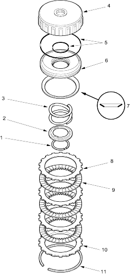

 |
- SNAP RING
- SPRING RETAINER
- RETURN SPRING
- 1ST-HOLD CLUTCH DRUM
- O-RING, Replace
- CLUTCH PISTON
- DISC SPRING
- CLUTCH PLATES, 3
Standard thickness:
1.6 mm (0.06 in.)
- CLUTCH DISCS, 3
Standard thickness:
1.94 mm (0.076 in.)
- CLUTCH END PLATE
- SNAP RING
|